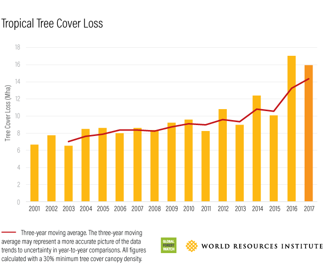

Reducing Deforestation Rate
# Deforestation is accelerating
Deforestation is the second leading cause of global warming and produces about 24% of global greenhouse gas emissions. Scientist say that deforestation in tropical rainforests adds more carbon dioxide to the atmosphere than the sum total of all the cars and trucks on the world’s roads.
The 2017 tree cover loss numbers are in, and they’re not looking good. Despite a decade of intensifying efforts to slow tropical deforestation, last year was the second-highest on record for tree cover loss, down just slightly from 2016. The tropics lost an area of forest the size of Vietnam in just the last two years.
In addition to harming biodiversity and infringing on the rights and livelihoods of local communities, forest destruction at this scale is a catastrophe for the global climate. New science shows that forests are even more important than we thought in curbing climate change. In addition to capturing and storing carbon, forests affect wind speed, rainfall patterns and atmospheric chemistry. In short, deforestation is making the world a hotter, drier place.
Below charts shows that deforestation is accelerating and we should be doing something about it.
# Tropical tree cover loss
# Reducing forest area
# Where have forests been lost and gained?
# What about in ASEAN?
To see deforestation over time, click on the play button at the left bottom corner of the chart.# ASEAN countries and deforestation rate
# It starts with you.
According to the above charts, nature is telling us this is urgent. We all need to do something about it.
1. Leave forests standing. The cutting down of trees causes billions of tons of carbon dioxide (a greenhouse gas) to be released into the air. This makes the earth become warm and encourage the green house effect which is the main player of climate change.
2. Plant a tree. The most straightforward personal strategy to fight against deforestation is to plant a tree. Planting a tree could be considered a lifelong investment into the environment and your good mental health.
With that being said, the cutting down of trees causes billions of tons of carbon dioxide (a greenhouse gas) to be released into the air. By planting trees, you are helping to combat global warming because trees absorb carbon dioxide. You are also helping to reduce run off water from the hills.
3. Reduce the forest products. As a consumer, you can help reduce the demand for more logging (especially illegal logging) by ensuring that you only purchase products which are certified by the Forest Stewardship Council (FSC). The FSC is currently the best global standard in forest management, and provides a system for interested parties to work towards responsible forest management.
4. Use recycled products. You may have noticed a little label “made from recycled paper” on your new notebook. The same label can be found on many other daily use items like books, paper bags, egg packaging and even toilet paper. By choosing items made from recycled paper, you make a conscious effort to lower the demand for more timber.
Besides decreasing the need to cut more trees, your purchase is also supporting paper recycling facilities and reducing the amount of waste entering landfills. Therefore, try to purchase your next notebook made from recycled paper and the environment will be very thankful.
5. Avoid products that include palm oil. While a small amount of palm oil may be sustainably produced, the majority comes from recently cleared land. Palm oil production has become one of the main causes of tropical rainforest destruction around the world today.
6. Support organizations that reforest and conserve. Numerous international and locally-focused organizations strive to protect forests from deforestation and apply sustainable forestry practices. You can support their efforts by visiting their websites, making donations, or perhaps even participating in their volunteering programs.
# Technology Involvement
. . . You may know planting trees is one of the best ways to fight climate change.
However we do not know how many trees to plant to cover carbon emission. Technology is the solution for this question and there is a tool on the Crowther Lab website enables users to look at any point on the globe, and find out how many trees could grow there and how much carbon they would store. It also offers lists of forest restoration organizations.
The Crowther Lab uses nature as a solution to:
- better allocate resources – identifying those regions which, if restored appropriately, could have the biggest climate impact
- set realistic goals – with measurable targets to maximize the impact of restoration projects
- monitor progress – to evaluate whether targets are being achieved over time, and take corrective action if necessary
. . . The way of planting can be managed by the help of technology.
A tech company called BioCarbon Engineering has been using the flying robots to plant trees on a massive scale. The drones, which were developed by an ex-NASA engineer, are designed to fire off pre-germinated seed pods into the ground.
The drones have been shown to plant trees exponentially faster than locals being forced to plant them by hand, and the method is far cheaper than traditional planting methods.
# Aerial mangrove restoration using drones
# Our Forests, Our Lives
As we mentioned above, forest restoration or planting trees is one of the best solutions for protecting deforestation. When you plant a tree, you are contributing in protecting our planet from global warming. The day the forest dies, the day our lives die. So, what are you waiting for? Let's plant some tree!